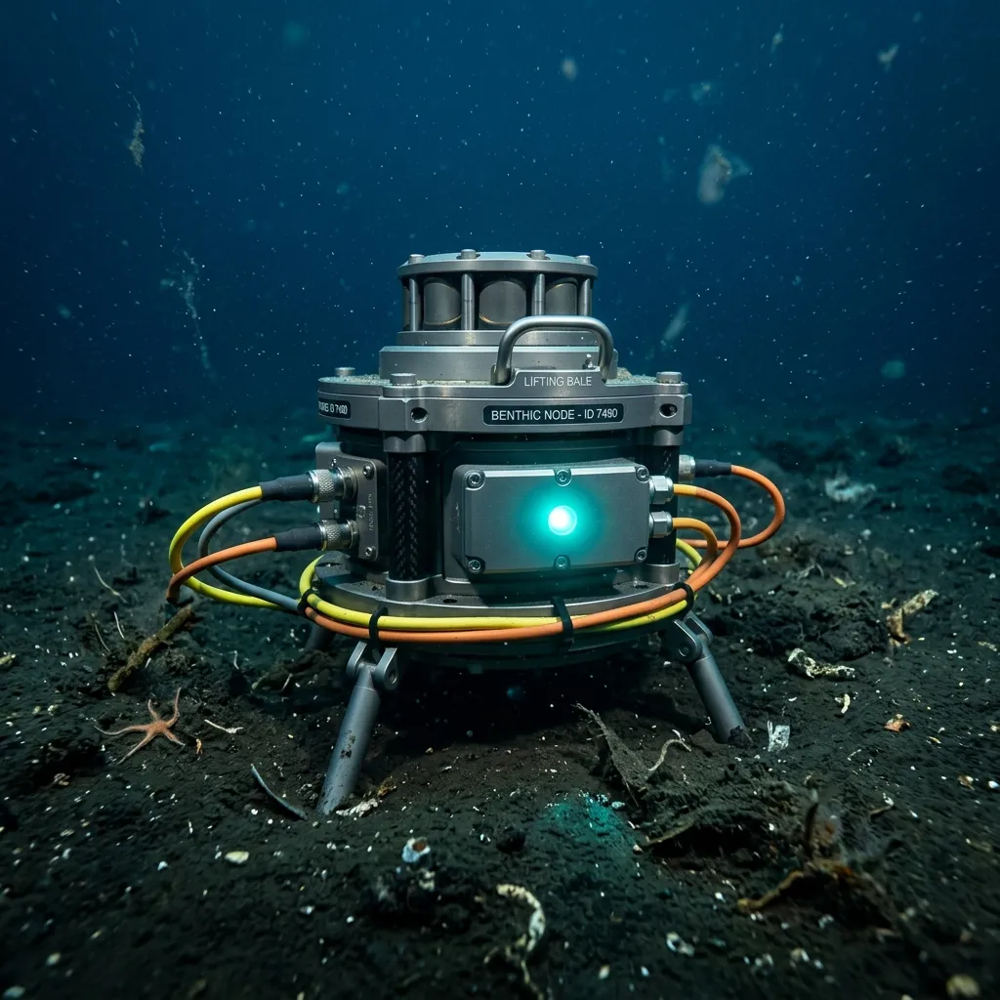
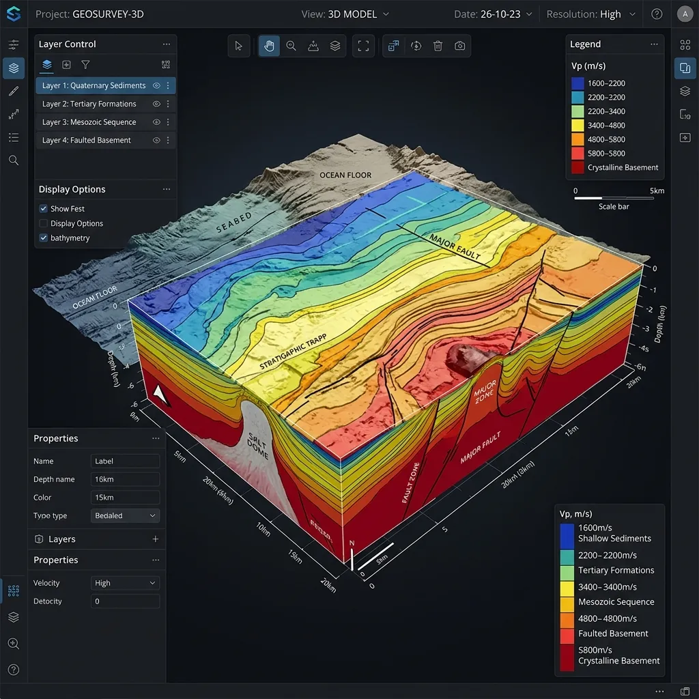
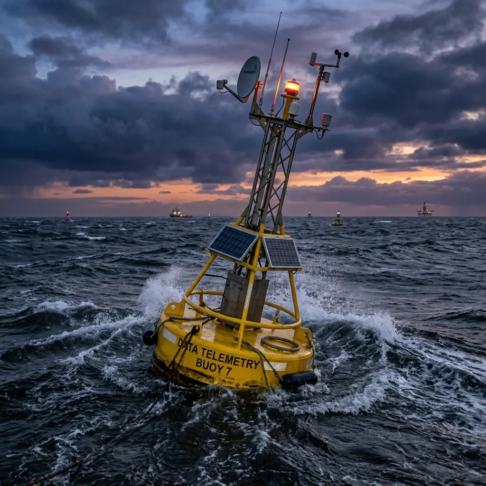

Passive Acoustic Sub-Surface Inversion for Marine Geotechnics.
Continuous 3D seabed acoustic telemetry and shear-wave velocity profiling without invasive boreholes or explosive seismic sourcing.
Offshore seabed characterisation historically demanded destructive borehole drilling or high-decibel airgun surveys that disrupt marine ecosystems and delay project timelines. Substratum Signals deploys autonomous seabed piezoelectric arrays that capture ambient ambient acoustic energy and micro-seismic vibrations. By executing real-time full-waveform inversion on offshore edge compute buoys, we deliver sub-metre resolution sediment strata profiles directly to marine engineering teams in Lowestoft and across the North Sea.
Initiate Technical Survey ScopeLow-Frequency Acoustic Inversion: Reading the Earth’s Natural Resonances

Sediment layers beneath the ocean floor respond dynamically to natural acoustic pressures, including tidal displacement, swell dynamics, and background micro-seismicity. Traditional geophysical surveys flood the water column with artificial acoustic pulses, attempting to read brute reflections. Substratum Signals utilizes passive full-waveform inversion (FWI), listening to the natural attenuation and velocity dispersion of acoustic waves as they traverse sub-surface strata.
Our Acoustic-Sentry Grid consists of thirty-two ultra-low-noise hydrophones anchored directly to the benthic seabed. As ambient wave energy passes through clay, gravel, and bedrock layers, the material's shear modulus modifies the acoustic phase velocity. Embedded edge processors process these phase shifts in real time using ray-tracing algorithms, generating continuous 3D shear-wave velocity (Vs) profiles up to three hundred metres beneath the mudline. The resulting datasets provide offshore geotechnical engineers with immediate shear strength and void detection data, eliminating the risk of drilling into unmapped gas pockets or unstable glacial till.
Full-Waveform Inversion Engine
The core computational matrix for signal processing captures continuous passive reception across a bandwidth of 0.1 Hz to 500 Hz. Utilising advanced ray-tracing algorithms over vast ambient datasets, the engine computes shear-wave velocity profiles at an unprecedented 0.5-metre spatial resolution across the entire array footprint, ensuring total volumetric clarity.
Benthic Hydrophone Array
Encased in precision-machined solid titanium pressure housings, these ultra-low-noise acoustic sensors boast a certified 3,000-metre operational depth rating. Engineered for extreme subsea endurance and stability, each benthic unit supports a rigorous 180-day continuous deployment cycle before necessitating retrieval and calibration.
Telemetry Bandwidth
Via dual Satellite and LORA redundant links, vital acoustic data transmission maintains an exceptional latency of under 120 seconds. This ensures critical phase shifts travel from the benthic sensor grid straight to your cloud dashboard with near-instantaneous reliability.

Environmental Compliance
Operating completely passively with absolutely 0 dB active acoustic emissions ensures zero marine mammal disturbance during the surveying process. This strict adherence to environmental compliance eliminates regulatory hurdles and accelerates site approvals.
Edge Processing Unit
This industrial ARM-based DSP buoy is powered by an integrated solar and wave energy harvester, allowing for indefinite autonomous processing. By executing complex waveform inversions at the surface edge, it drastically reduces bandwidth requirements.
Marine Survey Applications
Mitigating geological risk for heavy offshore marine construction and infrastructure remains our primary directive. By characterising the seabed entirely passively, project operators maintain rigorous safety standards and accelerate critical path timelines for installations.
Monopile Foundation Assessment
For offshore wind developments, ensuring foundational stability is a critical parameter. Our passive full-waveform inversion accurately maps subsurface clay and gravel horizons with exceptional precision. This identifies hidden structural weaknesses without the severe environmental impact of traditional borehole drilling.
Sub-Sea Cable Hazard Mapping
Unmapped gas pockets and unstable glacial till present severe hazards to telecommunication networks and power lines. Continuous acoustic monitoring maps these microscopic seabed anomalies along extended cable corridors, optimising safe routing strategies for delicate sub-sea cables.
Geothermal Caprock Monitoring
Deep geothermal energy extraction requires rigorous oversight of reservoir integrity. The Acoustic-Sentry Grid actively tracks micro-seismic shifts in the overlying caprock, delivering critical feedback on structural stress and long-term geological stability across extended operational timeframes.
Hardware & Array Specifications
Deploying the Acoustic-Sentry Grid leverages highly precise ROV positioning protocols to ensure optimal sensor array spacing across the target benthic zone. Each individual sensor node relies on proven dual-redundant acoustic release mechanisms. This failsafe engineering guarantees secure, safe hardware retrieval even after extended 180-day operational cycles amidst severe deep-water ocean currents.
Above the surface, the dedicated telemetry buoy is physically hardened against the extreme cyclonic weather conditions typical of the North Sea environment. Combining advanced solar harvesting technology with heavy-duty battery redundancy, the floating system sustains continuous edge data processing and satellite uplink transmission. This rugged, fully autonomous integration ensures that vital shear-wave velocity profiles are continuously captured, computed, and securely delivered without technical interruption, regardless of rapidly deteriorating surface weather states or prolonged winter storms that would typically halt traditional surveys.
Geophysical Credentials & Field Proof
Over 4,200 km² of seabed has been profiled globally with absolute zero active acoustic emissions.
Substratum Signals has successfully executed critical subsurface evaluations across major European marine infrastructure projects. Key verified deployments include comprehensive monopile foundation profiling for the extensive Dogger Bank Wind Farm survey, meticulous sub-surface geological hazard mapping along the critical Baltic Sea pipeline route, and continuous structural caprock monitoring for the East Anglia geothermal trial.
We maintain established industry trust through unwavering compliance with rigorous international offshore survey standards. All technical operations strictly adhere to the latest IMCA guidelines for safe maritime deployment and equipment retrieval. Furthermore, we maintain full, independently audited ISO 9001 compliance for all geophysical data acquisition and telemetry processing. This operational rigour guarantees that geotechnical engineering teams receive uncompromised, structurally accurate datasets for immediate analysis and project integration.
Technical FAQ
Addressing engineering and procurement parameters for marine geotechnicians.
How does spatial resolution compare to traditional core sampling?
While core sampling provides highly localised point data, it entirely misses critical geological anomalies situated between boreholes. Our passive full-waveform inversion delivers a continuous 3D volumetric model at an unprecedented 0.5-metre resolution, interpolating shear-wave velocity across the entire survey area rather than relying on isolated physical samples.
What are the weather operating limits for the array?
The benthic hydrophones operate completely independently of surface weather dynamics. However, the surface telemetry buoy is structurally rated for Sea State 6. During extreme cyclonic events, edge data is securely buffered locally on the seabed nodes and automatically transmitted once surface satellite connectivity is reliably restored.
What are the deployment depth ranges for the grid?
The Acoustic-Sentry Grid features heavy-duty titanium-housed sensor nodes engineered, tested, and certified for a maximum operational depth of 3,000 metres. This robust pressure rating facilitates secure deployments ranging from shallow coastal wind farm sites down to extreme deep-water pipeline routing environments without hardware failure.
In what formats is the geophysical data delivered?
Processed 3D shear-wave velocity models and raw acoustic telemetry are securely exported in standard industry formats, primarily including SEG-Y and RESQML. This strict standardisation ensures seamless, immediate integration into existing geological modeling suites and engineering workflows heavily utilised by geotechnical project managers globally.
Do deployments require special environmental sign-offs?
Because the entire system relies on purely passive acoustic reception with zero active emissions, it bypasses the stringent environmental impact assessments typically required for aggressive airgun surveys. It natively complies with strict marine mammal protection regulations, thereby significantly accelerating overall project permitting timelines.
What are the typical mobilization lead times?
From our dedicated operations centre located in Lowestoft, standard mobilisation for a complete thirty-two node array grid requires fourteen to twenty-one days. Accelerated deployment can be actively coordinated for critical emergency hazard assessments, strictly subject to immediate vessel availability and prevailing North Sea transit conditions.
Survey Intake & Tender Enquiries
To initiate a formal technical survey scope, offshore geotechnical project managers must provide precise site boundary coordinates, the specified target geological depth required below the mudline, and the projected operational timeframe for the campaign. Our senior geophysical engineering team will systematically evaluate these initial parameters, carefully model the anticipated ambient acoustic environment, and outline the absolute optimal sensor array deployment strategy tailored specifically for your unique sub-surface engineering requirements. We prioritise highly accurate, inherently safe data acquisition to reliably inform your critical structural engineering decisions.
Please contact our dedicated Lowestoft operations team directly to submit detailed project tenders or request a preliminary technical consultation regarding our passive full-waveform inversion capabilities and hardware availability.
Initiate Technical Survey ScopeOperations Office: North Sea Marine Centre, Waveney Dock Road, Lowestoft, NR32 1BN
Telephone: +44 1502 589104
Email: survey@substratum-signals.co.uk